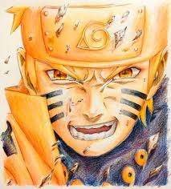
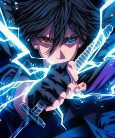
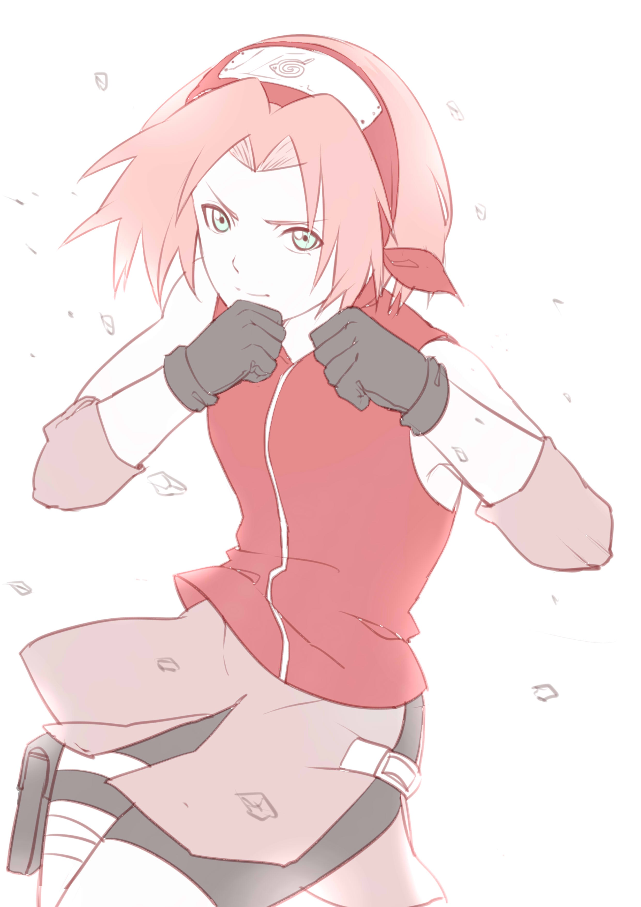
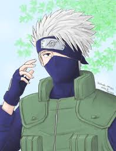

うずまきナルト
CV: 竹内順子
本作の主人公。体内に強力な獣「九尾」を宿し、窮地の際にも最後まで諦めず状況を打開するなど、並外れた根性の持ち主である。

うちはサスケ
CV: 杉山紀彰
主人公・うずまきナルトの親友にして、宿敵ともいえるほどのライバル[5][6]。三大瞳術の一つであり、一族特有の瞳術である写輪眼を受け継ぐ木ノ葉で最も強い伝説の「うちは一族」の末裔。

春野サクラ
CV: 中村千絵
成績優秀な優等生ではあるが、一方で普段表には出さない攻撃的で非模範的な一面があり、それを強調した人格が「内なるサクラ」と呼称される。これはサクラが普段押さえ込んでいる心の内面を具現化したようなもので、ナルトやカカシへの陰口やサスケへの想いを吐露しており、ときには表に出てきている。

はたけカカシ
CV: 井上和彦
血継限界である写輪眼を持ち、この洞察眼によって1000種類以上の技を写し取り自分の技にしてきたため、他国では「写輪眼のカカシ」又は「コピー忍者のカカシ」という異名をもつ。しかしスタミナを多く消耗するため、多用すると戦闘不能に陥るという欠点がある。